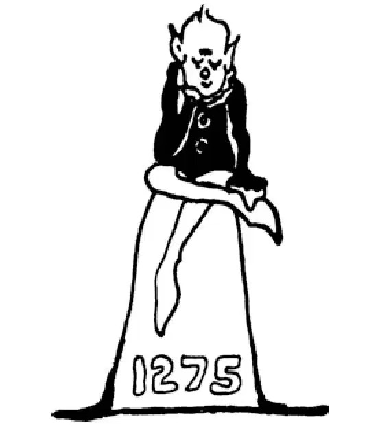

58
A Great Story Teller
一位了不起的讲故事的人

FAR away from England,
Far off in the direction of the rising sun,
Far beyond Italy and Jerusalem and the Tigris and Euphrates and Persia was a country called Cathay—C-A-T-H-A-Y.
If you looked down at your feet, and the world were glass, you would see Cathay on the other side.
Cathay is the same place we now call China. There had been people living in Cathay, of course, all through the centuries that had passed, but Europeans knew little of this land or of its people.
In the thirteenth century or twelve hundreds, Mongols, who came from the north, were ruling China. Soon, it seemed that they might conquer all the other countries whose histories we have been hearing about. The ruler of the Mongols was a fierce fighter named Genghis Khan. Genghis Khan had an army of Tartar horsemen who were terrific fighters.
Genghis usually found some excuse for making war on others, but if he couldn't find a good excuse, he made up one, for he was bent on building an enormous empire.
Genghis and his horsemen swept over the land from Cathay toward Europe. They burned and destroyed thousands upon thousands of towns and cities and everything in their way. No one was able to stop them.
Genghis Khan had conquered the whole land from the Pacific Ocean to the eastern part of Europe. At last he stopped. With this kingdom he seemed to be satisfied. He might well have been satisfied, for it was larger than the Roman Empire or that of Alexander the Great.
Even when Genghis died, things were no better, for his son was just as fierce a fighter as his father and conquered still more territory.
But the grandson of Genghis Khan was much less warlike than his grandfather had been. He was named Kublai Khan, and he was quite different from his father and grandfather. He made his capital at a city in China called Peiping, now called Beijing, and ruled over this vast empire that he had inherited from his father. Kublai built magnificent palaces and surrounded himself with beautiful gardens, and he made such a wonderful capital for himself that Solomon in all his glory did not live in such splendor as did Kublai Khan.
Now, far, far off from Beijing and the palace of Kublai Khan, in the north of Italy was a city built on the water. Its streets were of water, and boats were used instead of carriages. This city was called Venice. About the Year 1260 there were living in Venice two brothers named Nicolo and Maffeo Polo. The Polos got an idea in their heads that they would like to see something of the world. So these two Venetian merchants started off toward the rising sun looking for adventure, just like boys in storybooks who go off to seek their fortunes. After several years of travel, always toward the east, they at last came to the gardens and to the magnificent palace of Kublai Khan.
When Kublai Khan heard that strange white men from a far-off place and an unknown country were outside the palace, he wanted to see them. They were brought into his presence. They told Kublai Khan all about their own land. They were good story-tellers, and they made it interesting. They told him also about the Christian religion and many other things that he had never heard of. After several years, the Polos went home to Venice.
The emperor was so much interested in the Polos and in the stories they told about their country that he wanted to hear more. In 1271 the Polos returned to China with Nicolo's teenage son, Marco. The emperor persuaded them to stay with him and tell him more. He gave them rich presents. Then he made them his advisers and assistants in ruling his empire. The Polos stayed on for years and years and years and learned the language and came to be very important people in Cathay.
At last after they had spent about twenty years in Cathay, the Polos thought it was about time to go home and see their own people again. They begged leave to return. Kublai Khan did not want them to go. In the end though he did let them go, and they started back to what once had been their home.
When they at last arrived in Venice, they had been away so long and had been traveling so far that no one knew them. They had almost forgotten how to speak their own language, and they talked like foreigners. Their clothes had become worn out and ragged by their long trip. They looked like tramps, and not even their old friends recognized them. No one would believe that these ragged, dirty strangers were the same fine Venetian gentlemen who had disappeared almost twenty years before.
The Polos told their townspeople all about their adventures and the wonderfully rich lands and cities that they had visited. The townspeople only laughed at them, for they thought them story tellers.
The Polos then ripped open their ragged garments, and out fell piles of magnificent and costly jewels, diamonds and rubies and sapphires and pearls— enough to buy a kingdom. The people looked in wonder and amazement and began to believe.
Marco Polo told his stories to a man who wrote them down and made a book of them called The Travels of Marco Polo . This is an interesting book for you to read even today, although we cannot believe all the tales he told. We know that he exaggerated a great many things, for he liked to amaze people.
Marco Polo described the magnificence of Kublai Khan's palace. He told of its enormous dining hall, where thousands of guests could sit down at the table at one time. He told of a bird so huge that it could fly away with an elephant. He said that Noah's Ark was still on Mount Ararat, only the mountain was so high and so dangerous to climb on account of the ice and snow with which it was covered that no one could go to see if the ark really was there.
【中文阅读】
离英国很远，
在太阳升起的方向，离我们很远，
远在意大利、耶路撒冷、底格里斯河、幼发拉底河和波斯以外的地方，有个国家叫中国——古英语叫“Cathay”。
如果你向自己的脚下看，而且世界像玻璃那样透明，你就能看到世界另一边的中国。
我们现在把中国称为“China”。当然自古以来中国就有人居住，可是这么多世纪过去了，欧洲人对这片土地和生活在那里的人们仍知之甚少。
在13世纪，也就是公元1200年以后，来自北方的蒙古人统治着中国。不久，他们就似乎要征服所有其他国家，那些国家的历史在本章之前我们都说过了。蒙古人的统治者是一位勇猛的战士，名叫成吉思汗。成吉思汗有一支鞑靼人的骑兵部队，这些骑兵都是所向无敌的勇士。
成吉思汗总会找些借口，与别国开战，但是如果找不到合适的借口，他就捏造一个理由，因为他一心要建立一个庞大的帝国。
成吉思汗和他的骑兵们席卷了从中国到欧洲的大地。他们烧毁了成千上万的村镇和城市，清除了阻挡他们前进的一切东西。没人能阻止他们。
成吉思汗征服了从太平洋到欧洲东部的全部陆地。最后他停了下来。对这样的大帝国他似乎感到满意了。他极有可能踌躇满志，因为这个帝国比罗马帝国或亚历山大大帝的帝国还要大。
即使成吉思汗死后，情况也没有任何好转，因为他的儿子也是和成吉思汗一样勇猛的战士，他继续攻占了更多的领土。
但是成吉思汗的孙子远没有他的祖父那样好战。他名叫忽必烈，与他父亲和祖父有很大的不同。他把都城建在中国一个叫北平的城市，现在被称为北京，统治着从父亲那里继承来的庞大帝国。忽必烈建造了富丽堂皇的宫殿，周围都是美丽的园林，他为自己建的这座都城是那么华美壮观雄伟，就连全盛时期的所罗门都没有像忽必烈这样享受过如此的奢华。
离北京和忽必烈宫殿很远的意大利的北部有一座建在水上的城市。水道相当于街道，船只代替了马车。这座城市叫威尼斯。大约在公元1260年威尼斯城里住着两兄弟，分别叫尼科洛·波罗和马飞奥·波罗。波罗兄弟俩脑中有个念头，就是想去见识一下这个世界。于是这两个威尼斯商人出发了，向着太阳升起的方向去寻求冒险，就像故事书里的男孩子们出发去寻找宝藏一样。经过几年一直向东的旅行，他们终于来到了忽必烈的皇家园林和宏伟的宫殿。
当忽必烈听说从遥远的不知名的国度来了两个古怪的白人，现在就在宫殿外面，就想见见他们。他们被带到了他的面前。他们给忽必烈讲了有关他们自己国家的所有的事情。他们很会讲故事，把故事说得生动有趣。他们还向他讲了基督教和其他一些他从未听说过的事情。几年后，波罗兄弟回到了家乡威尼斯。
忽必烈皇帝对波罗兄弟二人和他们所讲的关于他们国家的故事非常感兴趣，很想听他们再讲一些故事。公元1271年波罗兄弟又来到了中国，还带着尼科洛·波罗十几岁的儿子马可。皇帝说服他们留下来陪他，给他讲更多的故事。他赏赐给他们贵重的礼物。后来还请他们俩做他的顾问和助手，帮助自己治理国家。波罗兄弟在中国一待就是很多年，年复一年，他们学会了当地的语言，在中国变成了重要的大人物。
在中国待了大约二十年后，波罗兄弟终于觉得该回家乡去看看自己的亲人了。他们请求回国。忽必烈舍不得他们走，不过最终还是同意了。就这样他们开始返回他们阔别多年的家乡。
当他们最终抵达威尼斯时，由于他们离家太久，又经过漫长的旅途，已经没有人认识他们了。他们几乎忘了该怎么说母语，说起话来就像外国人一样。经过长途跋涉，他们的衣服已经变得破烂不堪。他们看上去像流浪汉，连他们的老朋友也都认不出他们了。没人相信这两个衣衫褴褛、脏兮兮的陌生人就是二十年前失踪的那两位优雅的威尼斯绅士。
波罗兄弟给镇上的人们讲了他们的历险经历以及他们到过的那些极其富庶的国家和繁华的城市。大家听了只是觉得好笑，认为他们不过是在编故事而已。
于是波罗兄弟扯开破烂的外衣，从里面掉下成堆的璀璨、昂贵的珠宝、钻石、红宝石、蓝宝石和珍珠——其价值足够买下一个王国了。人们惊叹不已地看着，这才开始相信他们说的是真事。
马可·波罗把他的故事讲给一个人听，这个人把这些故事记了下来，写成一本书，叫《马可·波罗游记》。这本书就是今天你读起来也很感兴趣，不过我们不能把他说的故事都当真。我们知道他把许多事情都夸大了，因为他想让人们对他的故事惊叹不已。
马可·波罗描述了忽必烈宫殿的雄伟。他提到里面有巨大的餐厅，能同时容纳几千宾客在桌前用餐。他还讲到一只特别大的鸟，可以驮着大象一起飞行。他说诺亚方舟仍然在亚拉腊山上，只是那山攀登起来太高太危险，因为山上覆盖着冰雪，没有人能够登上去查看方舟是否真的在那里。

公元1275年